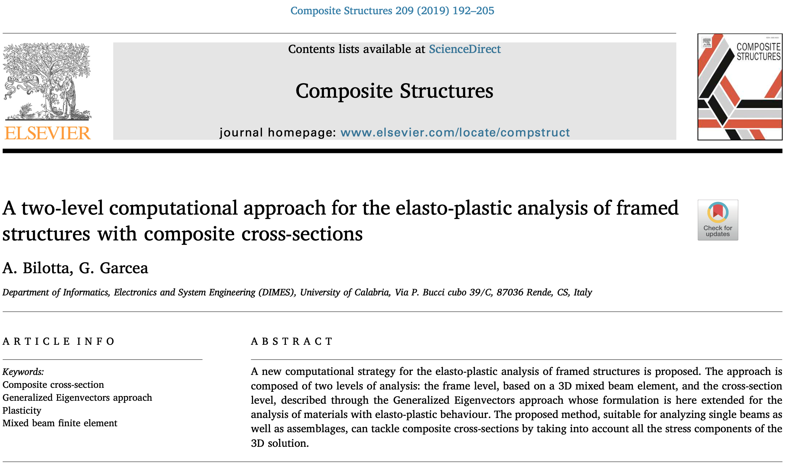
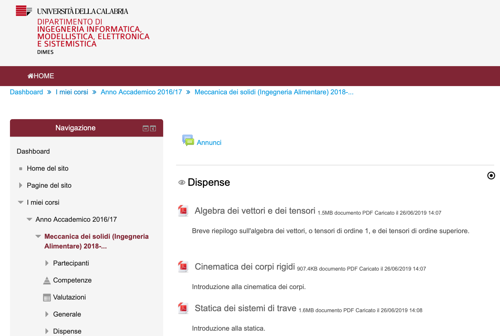
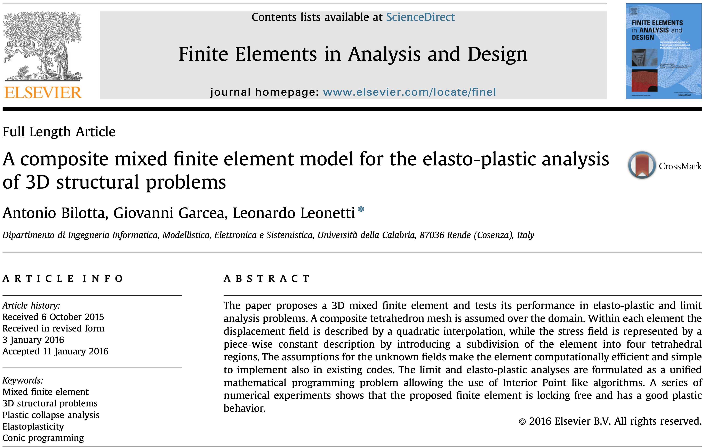
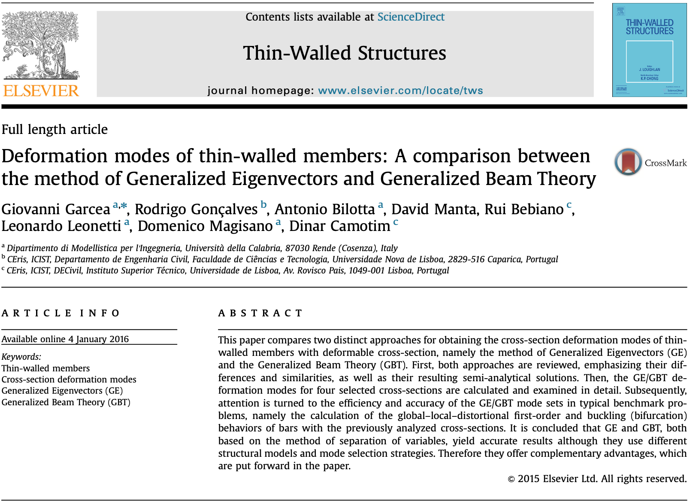

Antonio Bilotta
mi occupo di ricerca e didattica nella modellazione delle strutture
Chi sono
- Nome: Antonio Bilotta
- Posizione: Ricercatore
- Settore: Scienza delle costruzioni
- Ente: Università della Calabria
- Residenza: Italia
Dopo aver conseguito la laurea in Ingegneria civile, indirizzo Strutture, nel 1999 ho conseguito il Dottorato di ricerca in Meccanica computazionale. Da dottorando e negli anni a seguire, mi sono occupato di studiare e proporre modelli per l'analisi computazionale di strutture utilizzabili nel calcolo ingegneristico di costruzioni civili e costruzioni aeronautiche. La mia prima esperienza è stata la partecipazione ad un progetto di ricerca europeo finalizzato alla realizzazione di pannelli sottili in materiale composito per la costruzione di componenti di aerei, progetto a cui hanno aderito le principali industrie aeronautiche europee. La mia esperienza più recente è la partecipazione ad un progetto di ricerca in Sardegna per l'individuazione di strategie integrate per la tutela del sito archeologico di Porto Torres.
In ambito didattico ho ricoperto tutti i ruoli di insegnamento universitario, tutor, esercitatore e docente responsabile, per svariati corsi attinenti al settore scientifico disciplinare Scienza delle costruzioni. Fra questi: Meccanica computazionale delle strutture, Teoria delle strutture e Dinamica delle strutture per il corso di laurea magistrale in Ingengneria civile; Scienza delle costruzioni per i corsi di laurea triennali in Ingegneria chimica e Tecnologie per la conservazione e il restauro dei beni culturali; Meccanica dei solidi, impegno didattico attualmente in corso, per la laurea triennale in Ingegneria alimentare.
Sempre in ambito didattico, attualmente il mio impegno riguarda la produzione di materiale didattico fruibile online, corredato da brevi audio-lezioni ed arricchito con spiegazioni ed applicazioni svolte mediante MATLAB. L'utilizzo di metodi didattici che in aula stimolino la fruizione attiva delle lezioni e l'apprendimento cooperativo costituisce un'altro fattore divenuto rilevante nel mio approccio all'insegnamento.
I miei interessi
Ricerca
Lo studio e l'elaborazione di modelli computazionali per l'analisi di strutture e materiali sono al centro della mia attività di ricerca. La formulazione del modello, la valutazione preliminare con libreria scientifica (matlab, maple, etc.) e l'implentazione di codici prototipo in C++ costituiscono la base per la mia produzione scientifica.
Didattica
L'insegmaneto della Scienza delle costruzioni, nelle materie introduttive per i corsi di studio triennali e nelle materie specialistiche per i corsi magistrali, mi ha consentito di verificare l'efficacia dei metodi di insegnamento direttamente con gli studenti. Da loro proviene lo stimolo a sperimentare nuovi approcci all'insegnamento della modellazione delle strutture.
parole chiave
Metodo agli Elementi Finiti
Modelli avanzati di trave
Problemi inversi
Elementi Finiti di tipo misto
Analisi elasto-plastica delle strutture
C++
Librerie scientifiche (gsl, matlab, maple, mathematica, gmsh, petsc, slepc)
Teoria delle strutture
Algebra tensoriale
Meccanica del continuo
Calcolo tensoriale
Didattica innovativa (flipped, cooperative learning)
Strumenti editoriali (latex, html, pretext)
carriera
-
Ricercatore a tempo indeterminato (ICAR/08 - Scienza delle costruzioni)
Università della Calabria 2005-oggi -
Titolare di assegno di ricerca
Università della Calabria 2001-2005Strategie computazionali per l'analisi non lineare delle strutture
, contratto n. 113. -
Titolare di borsa post-dottorato
Università della Calabria 1999-2001
Formazione e titoli
-
Professore di Prima fascia (Abilitazione scientifica nazionale)
08/B2, ICAR/08 - Scienza delle costruzioni 2020-2029 -
Professore di Seconda fascia (Abilitazione scientifica nazionale)
08/B2, ICAR/08 - Scienza delle costruzioni 2017-2023 -
Meccanica computazionale (Dottorato di ricerca)
Università della Calabria 1999Con una tesi dal titolo
Formulazione di elementi finiti ad alte prestazioni mediante un approccio assumed stress
conseguo il dottorato di ricerca sotto la guida del Prof. Raffaele Casciaro. Nello stesso periodo concorro alla fondazione ed alle attività svolte dal gruppo di ricerca di Meccanica computazionale dell'Università della Calabria. -
Ingegneria civile (Laurea)
Università della Calabria 1995Con una tesi dal titolo
Analisi computazionale di continui elasto-plastici in campo geotecnico
conseguo la laurea, 110/110 con lode, sotto la guida del Prof. Raffaele Casciaro.
Esperienze recenti
-
Progetto di ricerca d'interesse nazionale
Inizio 2019 Fine 2022 (Prin 2017, n. 2017J4EAYB)Multiscale innovative materials and structures (MIMS)
-
Progetto di ricerca d'interesse regionale
Inizio 2015 Fine 2016 POR FESR, n. J85G09000350002Modelli matematici per la simulazione dei fenomeni di degrado strutturale in area archeologica. Il caso del parco archeologico di Porto Torres.
-
Progetto di ricerca d'interesse nazionale
Inizio 2013 Fine 2016 (Prin 2010-11, n. 2010NRBMTP)Models and algorithms for non-linear analysis of structures and validation of performance-based design rules
Pubblicazioni recenti
Alcuni lavori
-
 Libro cartaceo
Libro cartaceo
Libro didattico di Scienza delle costruzioni
Pubblicato nel 2004 dalla casa editrice McGraw-Hill, il libro è il frutto del lavoro di un gruppo di, al tempo della pubblicazione, ricercatori e borsisti (Turco, Formica, Bilotta e Porco) sotto la guida del Prof. Casciaro.
Argomenti trattati: Sistemi rigidi; Geometria delle aree; Sistemi continui; Problema di De Saint Venant; Sistemi di travi; Non linearità fisiche; Non linearità geometriche.
-

-
 Progetto MADAR
Progetto MADAR
MADAR (2015)
MA(tematica)-D(egrado)-AR(cheologia). Modelli matematici per la simulazione dei fenomeni di degrado strutturale in area archeologica. Il caso del parco archeologico di Porto Torres.
Lavoro svolto: modellazione geometrica dei manufatti mediante rilievo laser scanner e costruzione automatica delle mesh di elementi tetraedrici utilizzate successivamente nelle analisi lineare, dinamica e non lineare.
Keywords: laser scanner, gmsh, tetrahedral finite element, cahotic masonries, Hoffman plasticity.
-
Progetto di Didattica Innovatica

Didattica innovatica - Obiettivo strategico BC3 (2016-2018)
All'interno delle finalità generali del progetto (Obiettivo BC3) portato avanti dall'Università della Calabria, ho realizzato materiale didattico, fruibile tramite piattaforma Moodle, composto da dispense, una serie di audio-lezioni e questionari di autoverifca sui principali argomenti trattati nel corso di Meccanica dei solidi, attività in aula svolte favorendo la partecipazione e l'apprendimento attivo.
Keywords: flipped learning, Moodle, BYOD, cooperative learning, meccanica dei solidi.
-
 Progetto "multiscale"
Progetto "multiscale"
PRIN (2019-2022)
Progettto PRIN, Multiscale Innovative Materials and Structures (MIMS). Consorzio di università: Calabria, Salerno, ...
Keywords: comportamento non lineare, algoritmi, modelli strutturali, regole di progettazione.
-

-
A composite mixed ...

Finite Elements in Analysis and Design 113 (2016) 43–53
Nell'articolo si propone un elemento finito misto di forma tetraedrica per l'analisi elastoplastica e l'analisi limite di problemi 3D.
Keywords: Mixed finite element, 3D structural problems, Plastic collapse analysis, Elastoplasticity, Conic programming.
-
Libro online per la didattica

Introduzione alla Meccanica dei solidi
Progetto editoriale iniziato nel Novembre 2019 per la realizzazione di un testo fruibile online per un corso semestrale sulla Meccanica dei solidi.
Keywords: Meccanica del continuo, Statica, preText, MATLAB.
-
 Progetto APRICOS
Progetto APRICOS
APRICOS (1996-2000)
Progettto BRITE EURAM, Advanced PRImary Composites Structure. Consorzio: Aerospatiale, Alenia, Airbus, British Aerospace, Casa, Dassault, Eurocopter, INTA, NLR, Saab, Sabca. Il programma APRICOS ha avuto come obiettivo lo sviluppo di fusoliere in composito capaci di ridurre i costi di manutenzione del 30% rispetto ai velivoli convenzionali in metallo.
Lavoro svolto dal gruppo di ricerca del Laboratorio di Meccanica computazionale: sviluppo di un codice di calcolo denominato KASP (Koiter Analysis of Slender Panels) per l'analisi in campo non lineare di pannelli in materiale composito.
Keywords: geometrical nonlinearity, Koiter, composites, High Continuity finite elements.
-
 Multiscale 3D mixed ...
Multiscale 3D mixed ...
European Journal of Environmental and Civil Engineering, 2016
Nell'articolo si propone l'analisi in campo non lineare di edifici storici in muratura caotica mediante un approccio computazionale multiscala.
Keywords: Historical masonry, Computational homogenisation, Mixed finite elements, Numerical methods.
-
 Numerical size estimates ...
Numerical size estimates ...
International Journal of Solids and Structures, 168 (2019) 58-72
Nell'articolo si propone un approccio teorico-numerico per la determinazione della dimensione di inclusioni all'interno di di piastre soggette a carichi ortogonali al piano medio.
Keywords: Non-destructive tests, Kirchhoff-Love plates, Inclusions, Size estimates
-

-

Introduzione alla Meccanica dei Solidi
Il testo fornisce un'introduzione alla Meccanica dei solidi che comprende sia le basi della Meccanica del continuo sia i primi rudimenti di Statica. Pensato per coprire in un corso semestrale tematiche tradizionalmente abbastanza distanti dal punto di vista del linguaggio utilizzato, gli argomenti trattati vengono presentati sulla base di un linguaggio il più possibile uniforme e privilegiando come supporto l'interfaccia web disponibile online che consente di variare le modalità di esposizione passando dal testo tradizionale a brevi video lezioni, animazioni o riferimenti ad altre risorse web.
Altro aspetto distintivo della presente introduzione è l'utilizzo di MATLAB come strumento di elaborazione simbolica e numerica. Ciò consente allo studente di concentrarsi solo sulla formulazione dei modelli e delle operazioni necessarie, apprendendo così anche l'utilizzo di uno strumento di calcolo automatico. Esperienza in cui il linguaggio computazionale assume il ruolo di paradigma di riferimento utilizzabile per lo studio della Meccanica dei solidi ma anche di altre discipline ingegneristiche.